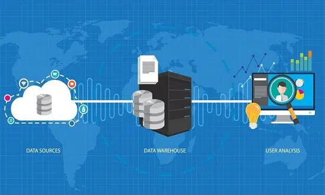

La informatica es la rama que estudia el hardware y el software necesarios para tratar informacion de forma automatica.
¿PORQUE ES IMPORTANTE LA INFORMATICA EN LA ACTUALIDAD?
En la actualidad, gran parte de nuestro día a día está ligado de manera directa a la informática, ya que, en la mayoría de las veces, trabajamos desde una PC o un dispositivo electrónico. Permitiendo simplificar y optimizar nuestro rendimiento, reduciendo de manera notable el tiempo de trabajo. Las tecnologías de la información diseñan y desarrollan una gran cantidad de aplicaciones y software que las personas usan a diario y que mejoran significativamente su calidad de vida; ya que ayudan a reducir la distancia física, ahorran tiempo y simplifican los procesos. La informática continúa aportando innovaciones que facilitan la toma de decisiones, cada vez más precisa y rápida a través de instrumentos o procedimientos que realizan operaciones complejas sobre la marcha, en cualquier parte del mundo.
¿PARA QUE SIRVE LA INFORMATICA?
La informática nos ayuda a controlar de manera más eficiente los sistemas informáticos, y ponerlos al servicio del bienestar general. De igual manera, los computadores se utilizan para cientos de servicios, desde el uso cotidiano para ver películas, hasta para usos militares.
- Realizar cálculos complejos: Es capaz de realizar cálculos complejos que contienen una gran cantidad de información en un período de tiempo extremadamente corto. Actualmente, el auge de los datos masivos y la computación cuántica está desarrollando sistemas de computación más eficientes.
- Transferencia de información: Es capaz de transferir información entre diferentes dispositivos informáticos colocados en una red, independientemente de la distancia entre esos dispositivos. Asimismo, con una aplicación como WhatsApp, dos personas pueden intercambiar mensajes instantáneamente desde diferentes dispositivos (teléfono y computadora portátil), incluso si uno está en Nueva York y el otro en Singapur.
- Almacenamiento de información: Los sistemas informáticos son capaces de almacenar una gran cantidad de información. Por ejemplo en qué es la informática educativa todos los libros escritos en la historia humana equivalen a 480 TB de memoria.
LINKS:
INFORMATICAINFO